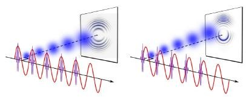

Fenomeno 3.
La dualidad onda particula es el fenome cuantico en el que una particula se comporta parcial o temporalmente como una onda y viceversa,este fenomeno fue obserbado inicialmente durante el experimento de la doble rendija,el cual,es infame por ser extremadamente confuso para la epoca,pues,los fenomenos cuanticos eran muy desconocidos,y no se sabia con exactitud lo que estaba ocurriendo.
Nicolas Pulido Pamia 3ESOC.